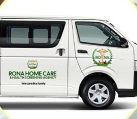

Every service can be arranged on its own or combined into a single care plan built around your household.
We bring blood pressure checks, blood glucose testing, and general health screening directly to companies, churches, and community groups across Kumasi.
This service is popular with workplaces running annual wellness days and with churches or community groups hosting health outreach events. Our team arrives with the equipment and staff needed to screen a group in a single visit.

Help with bathing, dressing, meal preparation, light housekeeping, and mobility — the everyday tasks that can become difficult after an illness, surgery, or with age.
This support can be arranged for a few hours a day, a few days a week, or as part of a full-time care plan, depending on what your family needs.
Missed or mistimed doses are one of the most common risks for people managing multiple prescriptions. Our caregivers provide structured reminders and light medication management so prescriptions are taken correctly and on schedule.
We coordinate with the client's existing physician and pharmacy rather than replacing that relationship.

Regular tracking of blood pressure, pulse, temperature, and oxygen levels, with any concerning changes flagged early and communicated to the client's family and physician.
This is often paired with our daily living support or nursing services for clients managing an ongoing condition.
Registered nurses available around the clock or on a scheduled basis, for clients recovering from surgery, managing a chronic condition, or needing consistent medical oversight at home.
Live-in arrangements place a nurse in the home for extended periods; live-out arrangements schedule visits at agreed times during the day.
Compassionate, dignity-first support for seniors and people living with disabilities — tailored to each client's mobility, medical, and personal needs.
We work with families to build a care plan around the client's routine, rather than asking them to adapt to ours.
Tell us about your situation and we'll recommend a care plan.